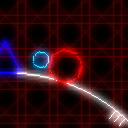

攻略のコツ
エネルギーを温存する
エネルギーを使うことで様々な補助効果が得られますが、消費のし過ぎには気を付けなければなりません。エネルギーが減るとプレイヤーは弱体化し、どんどん強く激しくなっていく敵の攻撃に対応できなくなります。エネルギーを上手に利用することで難易度は大きく変わります。
エネルギー消費による体力回復は最終手段
Sキーで体力を回復することができますが、そのエネルギー消費量は膨大です。これを多用するとあっという間にエネルギーがなくなってしまいます。代わりにDキーによるシールドを使い、被ダメージを減らしましょう。
このシールドはエネルギー消費量がとても少なく、張っている間はあらゆる攻撃のダメージをうけなくなります。
敵を倒す位置によるエネルギーの落とし方の違いを把握する
敵を空中で倒した場合と、地上で倒した場合とではエネルギーの落とし方、落とす量に大きな違いがあります。
空中で倒した場合はエネルギーは自動でプレイヤーに集まるので回収する必要はなく、取りこぼしもありません。
一方、地上で倒した場合エネルギーは周囲に散らばるだけでプレイヤーによってこないため、自分で回収する必要があります。代わりにに地上で倒した場合は空中で倒した場合よりもはるかに多くのエネルギーを放出します。
なので余裕がある場合は、敵が上陸するのを待ってから倒し、回収することでエネルギーを多く獲得することができます。ただし上陸後、敵は一定時間で爆発することに注意してください。
空中の敵はこれくらい
地上の敵はこんなに！

でも使うときは使う
……ここまで散々節約しましょうと書きましたが、終盤のステージなど、敵が大量に出てくるステージでは被ダメージが避けられないのでエネルギーを消費して体力を回復しましょう。うまく節約できていればエネルギーに余裕ができるので問題ありません。
クローンを上手に活用する
Zキーでクローンを作製することができますが、闇雲に出すだけではその効果が薄れてしまいます。敵の移動先、敵の出現位置、停止した敵の真下などに設置することでプレイヤー自身は攻撃を避けつつ、クローンの攻撃によって敵を倒すことができます。
敵の出現位置
敵の出現位置、タイミングはすべて固定されています。特にボスはほぼずすべて出現場所が同じなので、登場時に待ち構えてクローンを作製するなどし迎撃しましょう。
また、惑星についているマーカーはその位置の目安になります。
黄色矢印で示した部分がマーカーです。

テクニック
エネルギー0でシールド
エネルギーが0の場合でもシールドボタンを押せば一瞬(1フレーム)だけシールドが出現します。
プレイヤーの落下速度を制御する
空中で↓キーを押すと落下速度が速まります。また、空中で↑キーを押すと落下速度が遅くなります。
しゃがむ
しゃがむと衝突判定が小さくなります。
惑星の凹みを利用して被弾を防ぐ
画像のように惑星のくぼんだ場所にいると、横方向に飛んでくる弾から身を隠すことができます。さらにしゃがむと効果的です。
エネルギー量によるプレイヤーの強さ
エネルギーを取得するとプレイヤーはレベルアップします。レベルが上がるごとに弾の速度などが早くなりますが、特定のレベルで大きく強化されます。
| Lv 1～9 | 弾を上一方向のみに発射します。範囲が狭いのでしっかり狙って撃つ必要があります。 |
| Lv 10～19 | 弾を上方に2発ずつ発射します。少し範囲が広がり攻撃が当てやすくなります。 |
| Lv 20～29 | 弾を上方に3発ずつ発射します。さらに範囲が広がります。 |
| Lv 30～ | 弾を上方に5発ずつ発射します。広範囲な攻撃で敵を一掃できます。 |
こんなカンジ
また、各ボス終了終了時に維持しておきたいレベルの目安は以下の通りです。
| GreenBoss | Lv 5 |
| SkyBlueBoss | Lv 10 |
| RedBoss | Lv 15 |
| PurpleBoss | Lv 20 |
| PinkBoss | Lv 30 |
| ラスボス前 | Lv 30以上がほぼ必須 |
コンティニュー時のエネルギー引継ぎ
コンティニュー時には、コンティニュー前のゲームでの最大値を次のゲームの開始時に引き継ぎます。そのためエネルギーを大量に消費してからゲームオーバーになった場合でも、コンティニュー時にはエネルギー消費前の状態で再開することができます。
カメラの変更
1キーを押すとカメラを変更することができます。
1キーを押すごとに、通常(プレイヤー追尾)→惑星全景→プレイヤー追尾拡大→惑星全景拡大、と切り替わります。
最終ウェーブ・ラスボスの攻略
最終ウェーブ
最終ウェーブ(29th Wave)では敵が今までにないほど襲ってきます。被弾しまくることは確実なので常に回復キー(Sキー)を押しているくらいでないとクリアできません。エネルギーを大量に消費しますが、敵もその分大量のエネルギーを落とすためエネルギーのを心配する必要はありません。
ラスボス
ラスボスを倒すためにはシールド(Dキー)の使用が不可欠です。危険を感じたらシールドを張っておくことをお勧めします。さらに止まっているとすぐにやられてしまうため常に動くようにしましょう。また、HPが今までのボスと比べてケタ違いに多いので、ラスボス到達時にLv30に達していないと倒すのは極めて困難になります。
ゲームクリア後
一度ゲームクリアするとタイトル、プレイ履歴画面の背景が変わります。